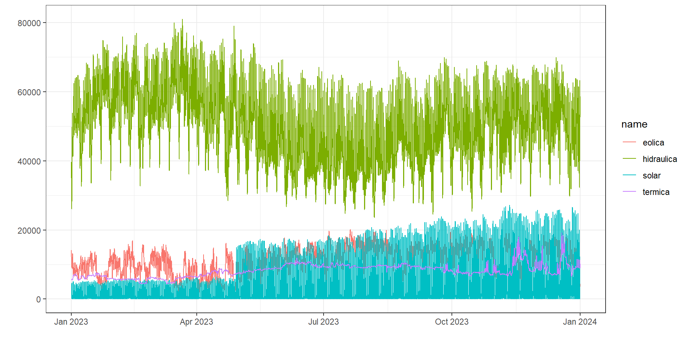
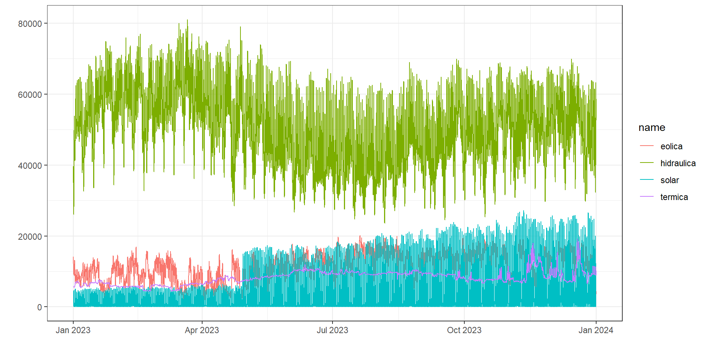
| name | mean | sd |
|---|---|---|
| solar | 4909.736 | 6929.487 |
| termica | 8250.471 | 1886.645 |
| eolica | 10887.856 | 3931.696 |
| hidraulica | 50466.854 | 11061.858 |
| name | 0% | 25% | 50% | 75% | 100% |
|---|---|---|---|---|---|
| eolica | 692.913 | 7975.784 | 11133.851 | 13983.090 | 20166.24 |
| hidraulica | 23565.749 | 41825.293 | 50623.416 | 58907.708 | 81006.77 |
| solar | 0.237 | 4.913 | 588.847 | 7368.716 | 27222.57 |
| termica | 4415.886 | 6868.407 | 8269.444 | 9438.016 | 19248.15 |
\[ r_k = \frac{\sum_{t=k+1}^T (y_t-\bar{y})(y_{t-k}-\bar{y})}{\sum_{t=1}^T (y_t-\bar{y})^2} \]
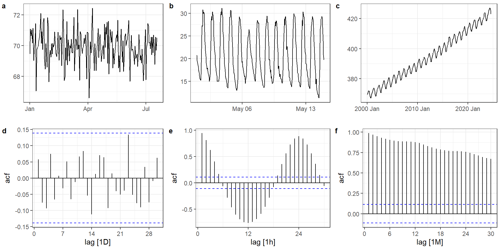
\[ \hat{y}_{T+h|T}=\frac{1}{T}\sum_{t=1}^Ty_t=\frac{y_1+y_2+...+y_T}{T} \]
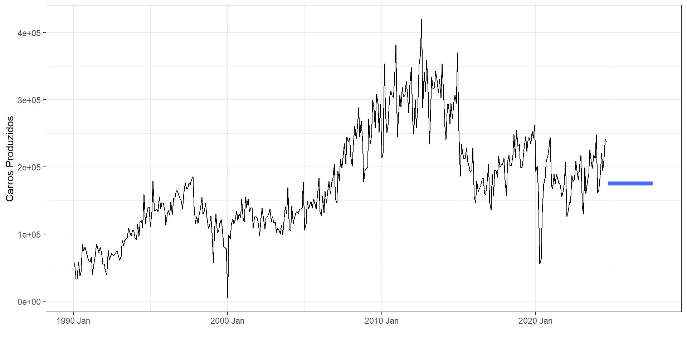
\[ \hat{y}_{T+h|T}=y_T \]
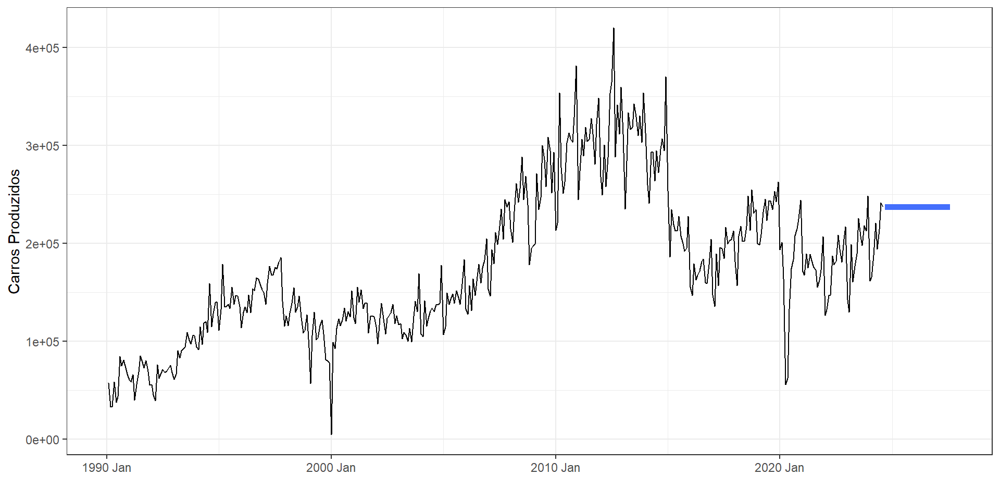
\[ \hat{y}_{T+h|T}=y_{T+h-m(k+1)} \]
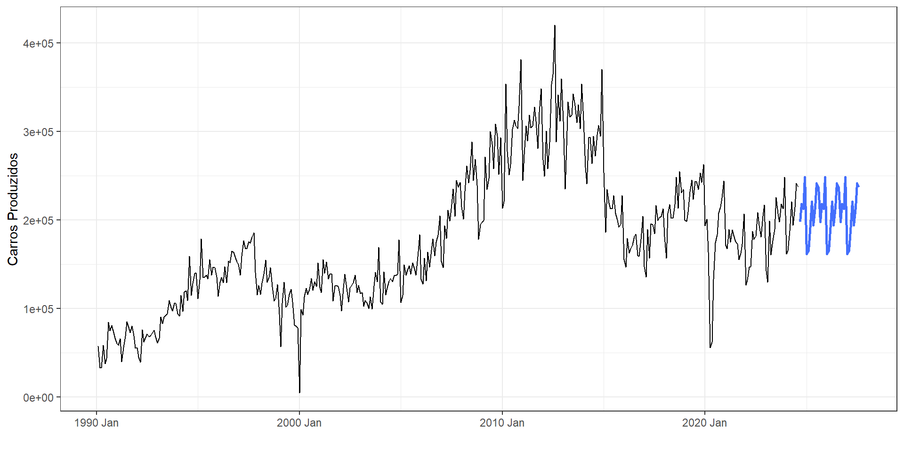
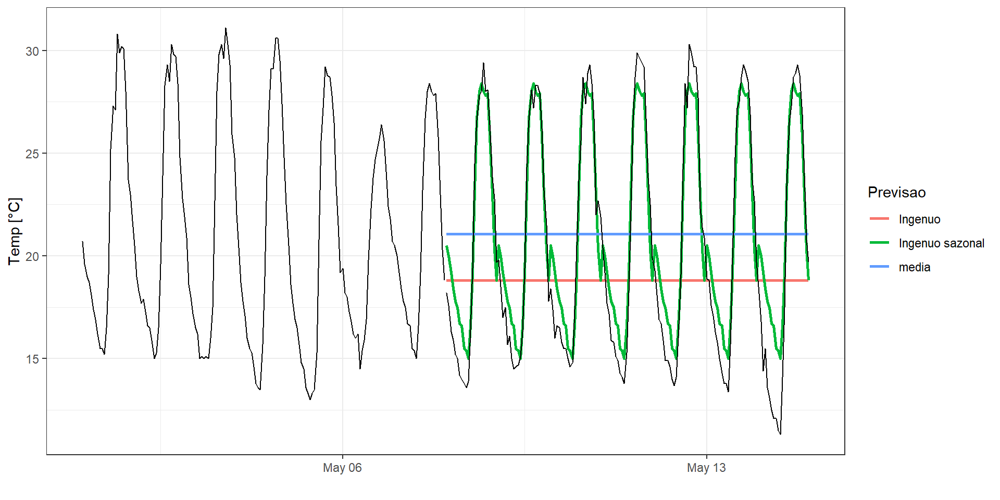
Variação do ingênuo que permite a previsão de observações com tendência de crescimento ou decréscimo segundo a deriva observada entre a primeira e última observação.
Previsão com o método da deriva para três dias à frente na série temporal de produção de carros no Brasil.
\[ \hat{y}_{T+h|T} = y_T + \frac{h}{T-1}\sum_{t=2}^T(y_t-y_{t-1}) =y_T+h \bigg(\frac{y_T-y_1}{T-1}\bigg) \]
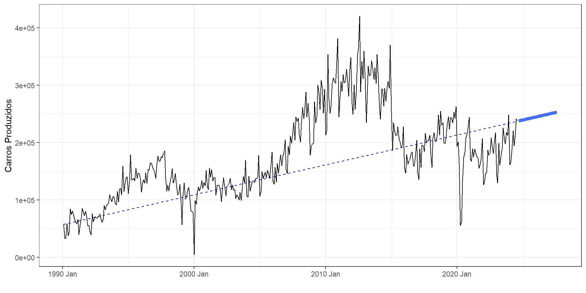
Valores previstos \(\hat{y}_{t|t-1}\), implicando que a previsão de \(\hat{y}_{t}\) é baseada nas observações \(y_1, ..., y_{t-1}\).
Resíduos (erros) de uma série temporal são calculados como a diferença entre o observado e o previsto em cada instante de tempo.
\[e_t=y_t-\hat{y}_t\]
.fitted) e os resíduos (.resid) para as previsões obtidas com o método Ingênuo sazonal para as últimas observações.| Data | Temp | .fitted | .resid |
|---|---|---|---|
| 2024-05-07 18:00:00 | 27.8 | 26.4 | 1.4 |
| 2024-05-07 19:00:00 | 27.9 | 25.6 | 2.3 |
| 2024-05-07 20:00:00 | 25.8 | 24.1 | 1.7 |
| 2024-05-07 21:00:00 | 23.0 | 22.4 | 0.6 |
| 2024-05-07 22:00:00 | 20.3 | 21.8 | -1.5 |
| 2024-05-07 23:00:00 | 18.8 | 20.7 | -1.9 |
Os resíduos de um modelo de séries temporais devem ser:
Não correlacionados.
Com média nula.
É interessante, porém não-obrigatório, que os resíduos sejam:
Homocedasticos.
Normalmente distribuídos.
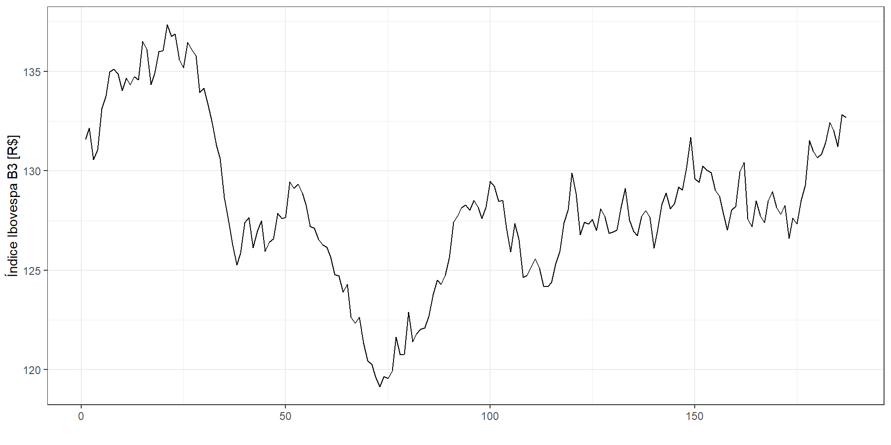
Gráfico de resíduos, correlograma e histograma dos resíduos.
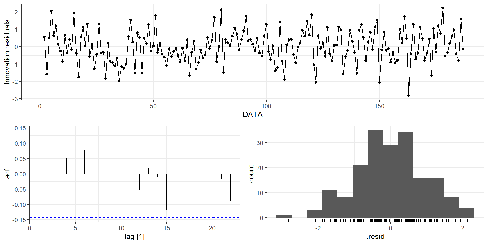Box-Pierce
\[ Q = T\sum_{k=1}^l r_k^2 \]
Ljung-Box
\[ Q^* = T(T+2)\sum_{k=1}^l (T-k)^{-1}r_k^2 \]
| .model | bp_stat | bp_pvalue |
|---|---|---|
| NAIVE(FECHAMENTO) | 9.180843 | 0.5150314 |
| .model | lb_stat | lb_pvalue |
|---|---|---|
| NAIVE(FECHAMENTO) | 9.508178 | 0.4846474 |
Intervalo de previsão com nível de probabilidade ou confiança de interesse.
Para, por exemplo, um intervalo de previsão de 95%, os limites garantem que o valor previsto estará entre eles com 95% de confiança.
Intervalo de previsão para \(h\) passos à frente com 95% de confianca.
\[ \hat{y}_{T+h|T} \pm1,96 \hat\sigma_h, \]
\[ \hat\sigma = \sqrt{\frac{1}{T-K-M}\sum_{t=1}^T e_t^2} \]
| Método | desvio-padrão para \(h\) previsões |
|---|---|
| Média | \(\hat\sigma_h = \hat\sigma\sqrt{1+1/T}\) |
| Ingênuo | \(\hat\sigma_h = \hat\sigma\sqrt{h}\) |
| Ingênuo sazonal | \(\hat\sigma_h = \hat\sigma\sqrt{k+1}\) |
| Deriva | \(\hat\sigma_h = \hat\sigma\sqrt{h(1+h/(T-1))}\) |
| .model | DATA | FECHAMENTO | .mean | 80% | 95% |
|---|---|---|---|---|---|
| RW(FECHAMENTO ~ drift()) | 188 | N(133, 0.91) | 132.7030 | [131.479758348216, 133.926187888343]80 | [130.83222756333, 134.57371867323]95 |
| RW(FECHAMENTO ~ drift()) | 189 | N(133, 1.8) | 132.7089 | [130.974440120116, 134.443452353002]80 | [130.056248045872, 135.361644427246]95 |
| RW(FECHAMENTO ~ drift()) | 190 | N(133, 2.8) | 132.7149 | [130.584949570352, 134.844889139326]80 | [129.457411675872, 135.972427033805]95 |
| RW(FECHAMENTO ~ drift()) | 191 | N(133, 3.7) | 132.7209 | [130.254917246509, 135.186867699728]80 | [128.949508815318, 136.492276130918]95 |
| RW(FECHAMENTO ~ drift()) | 192 | N(133, 4.7) | 132.7269 | [129.962575614885, 135.491155567911]80 | [128.49924889422, 136.954482288576]95 |
| RW(FECHAMENTO ~ drift()) | 193 | N(133, 5.6) | 132.7328 | [129.696794070542, 135.768883348813]80 | [128.089609121305, 137.37606829805]95 |
| RW(FECHAMENTO ~ drift()) | 194 | N(133, 6.6) | 132.7388 | [129.450980057934, 136.02664359798]80 | [127.71050705293, 137.767116602984]95 |
| RW(FECHAMENTO ~ drift()) | 195 | N(133, 7.6) | 132.7448 | [129.220850899508, 136.268718992965]80 | [127.35539289899, 138.134176993483]95 |
| RW(FECHAMENTO ~ drift()) | 196 | N(133, 8.6) | 132.7508 | [129.003440716867, 136.498075412165]80 | [127.019730739905, 138.481785389127]95 |
| RW(FECHAMENTO ~ drift()) | 197 | N(133, 9.5) | 132.7567 | [128.796596568561, 136.71686579703]80 | [126.700227935865, 138.813234429727]95 |
Usadas nas séries temporais para auxiliar no cumprimento das pressuposições sobre os resíduos.
Ou que alguma variação que aumenta ou cresce com o tempo seja corrigida.
Transformação logarítima.
Série original: \(y_1, y_2, ..., y_T\).
Série transformada : \(w_1, w_2, ..., w_T\), com \(w_t =log(y_t)\).
Transformação de Box-Cox
\[ w_t = \Bigg\{ \begin{matrix} \text{log}(y_t), \text{ }\lambda=0 \\ (\text{sign}(y_t)|y_t|^\lambda-1)/\lambda, \text{ }\lambda>0 \end{matrix} \]
onde \(\text{sign}(y_t) = 1\) se \(y\geq0\) e \(\text{sign}(y_t) =-1\), caso contrário.
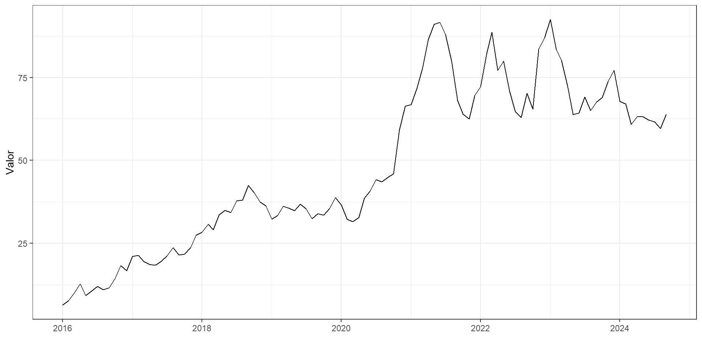
A avaliação ideal deve ser baseada no desempenho do modelo em novos dados e não nos valores residuais.
Deve-se considerar dados separados para teste do modelo ou em dados futuros.
Não deve-se considerar dados usados para estimar (treinar) o modelo para testá-lo.
Exemplo: Separação das primeiras 75% observações em treino e os 25% restantes para teste.
\[ e_{T+h} = y_{T+h} - \hat{y}_{T+h|T} \]
Onde: dados de treino \(y_1,...,y_T\) e de teste \(y_{T+1}, y_{T+2}, ...\).
Métricas mais comuns para avaliar os modelos.
| Métrica | Fórmula |
|---|---|
| MAE | \(\text{MAE = mean}(|e_t|)\) |
| RMSE | \(\text{RMSE = }\sqrt{\text{mean}(e_t^2)}\) |
| MAPE | \(\text{MAPE = mean}(|p_t|)\), \(p_t = 100e_t/y_t\) |
| MASE | \(\text{MAE = mean}(|q_j|)\) |
| .model | RMSE | MAE | MAPE |
|---|---|---|---|
| Ingenuo | 5.923621 | 4.980952 | 23.721859 |
| Ingenuo sazonal | 1.700928 | 1.405357 | 8.140928 |
| media | 5.697090 | 5.171627 | 27.555762 |